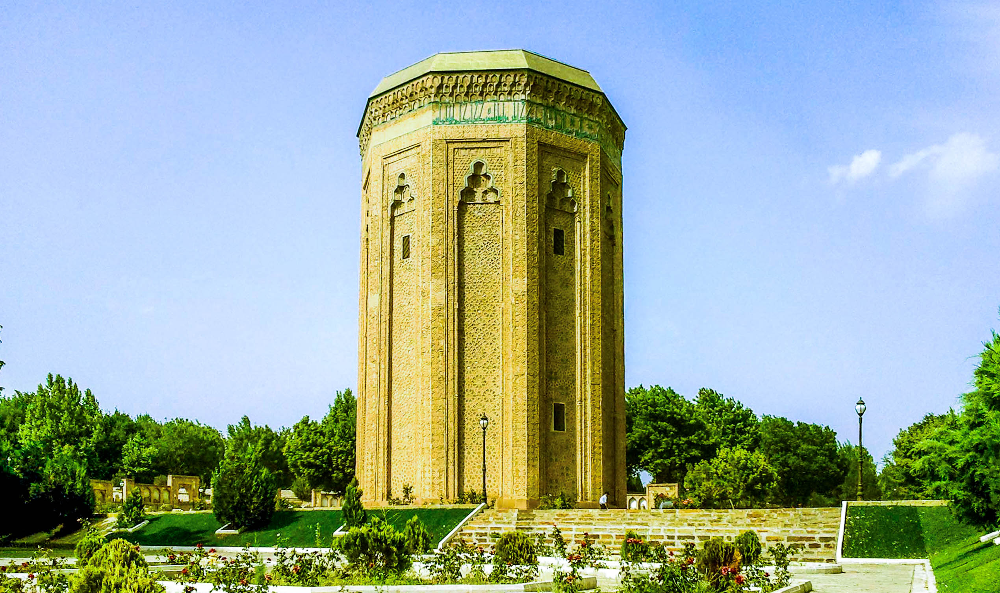
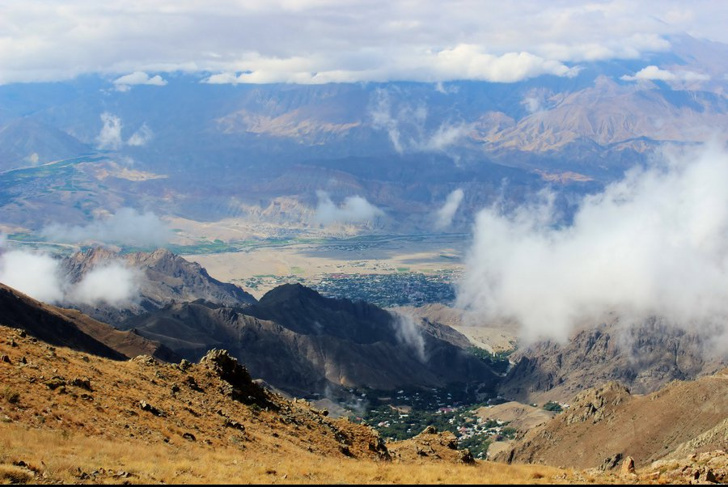
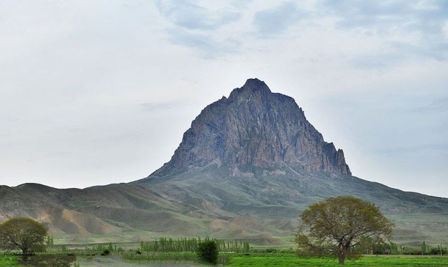
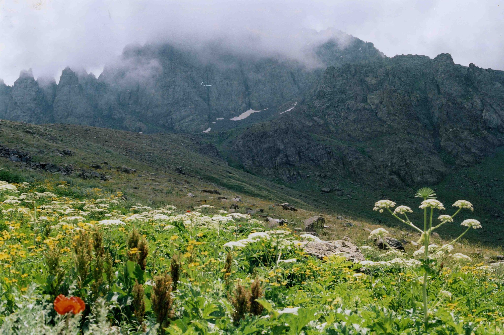

Möminə Xatun türbəsi — Azərbaycan Respublikası, NMR, Naxçıvan şəhərində yerləşən və həm də "Atabəy Günbədi" kimi tanınan tarix-memarlıq abidəsidir. Türbə Azərbaycan Respublikası Mədəniyyət və Turizm Nazirliyi tərəfindən dünya əhəmiyyətli abidə kimi qeydiyyata alımışdır.1998-ci ildə Möminə Xatun türbəsi digər Naxçıvan türbələri ilə birlikdə UNESCO-nun Ehtiyat siyahısına daxil edilmişdir.

Ordubad rayonu Arazın sol sahilində,Zəngəzur silsiləsinin ətəyindədir.Relyefi əsasən dağlıq,az bir hissəsi dağətəyi ,5–6 faizi isə aran ərazisindən ibarətdir.Ordubad, əvvəllər Fars ərazisində, indi isə Azərbaycan Respublikasında, şərqi Zaqafqaziyanın Araxes (Aras) çayının orta axarının şimal sahilində yerləşən bir şəhərdir. Təbrizdən təxminən 94 km şimal-qərbdədir və 948 m yüksəklikdədir. Ordubad şəhəri şimaldan Aşağı Əndəmic kəndi ilə, şərqdən Kotam kəndi ilə, cənubdan Araz çayı ilə, qərbdən isə Dəstə kəndi ilə həmsərhəddir.

İlandağ — Azərbaycan Respublikası, Culfa rayonunda dağdır. Dağın hündürlüyü 2415 metrdir.Vulkan mənşəlidir. Andezit-dasit süxurlarından təşkil olunmuşdur. Yamacları sıldırımlıdır. Kserofit kolluq və dağ-meşə landşaftı var. Zirvənin daha iki adı mövcuddur: onlardan biri İnandağ, yəni "İnam dağı", digəri isə Haçadağ, yəni zirvənin dar buğumla birləşdirilmiş iki hissədən ibarət olduğunu ifadə edən "ikiyə parçalanmış dağ" kimi səslənir.

Şərur rayonu – Muxtar Respublikanın qərbində yerləşir, cənubda İranla həmsərhəddir. Azərbaycan Respublikası Ali Sovetinin 7 fevral 1991-ci il tarixli, 55-XII saylı Qərarı ilə Naxçıvan Muxtar Respublikasının İliç rayonu Şərur rayonu adlandırılmışdır. Ərazisinin şimalı və şərqi dağ relyefinə malikdir. Dərələyəz dağ sistemi buradan keçir. Ən yüksək dağı – Qalınqayadır (2775 metr). Buradan Araz çayının qolu Arpaçay və digərləri axır. Arpaçay suyundan suvarmada istifadə edilir. Onun üstündə Arpaçay su anbarı tikilmişdir. Yerli faunası – muflonlar (dağ qoyunu), canavarlar, dağ keçiləri, tülkülər, qabanlar, dovşanlardır.